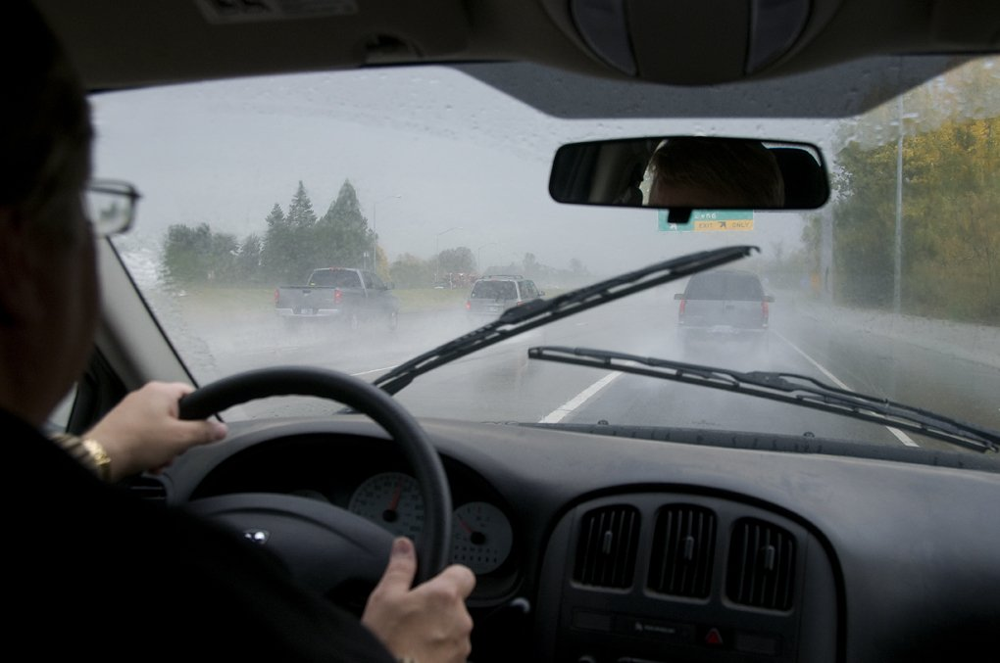
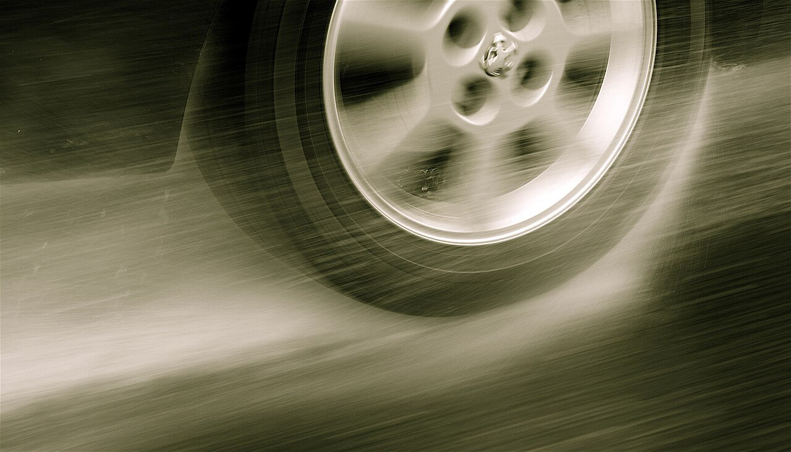
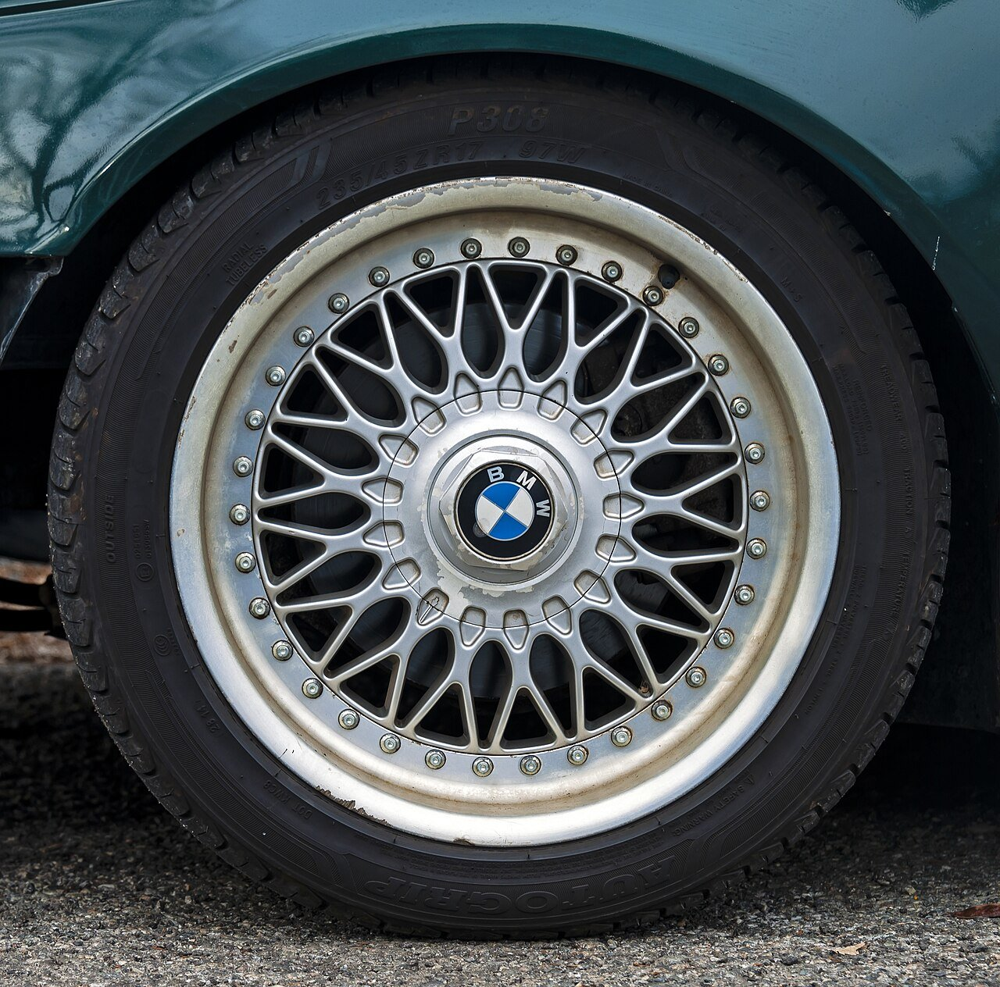
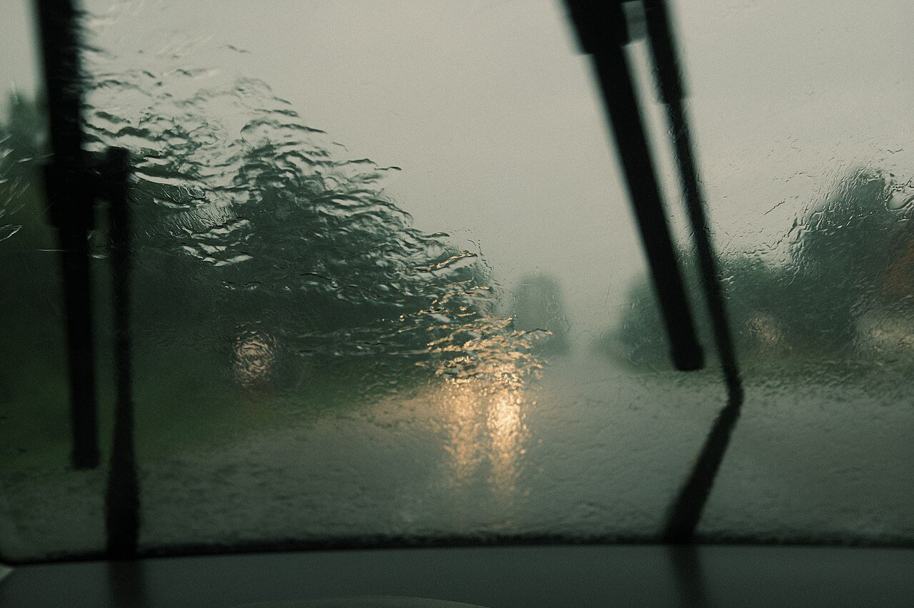

▲ 장마철에는 평소보다 시야 확보와 제동 거리 관리가 훨씬 중요해진다 ⓒ Oregon Department of Transportation, Wikimedia Commons (CC BY 2.0)
본격적인 장마철이 시작되면서 빗길 교통사고에 대한 우려도 커지고 있습니다. 빗길 사고의 상당수는 수막현상(하이드로플레이닝, Hydroplaning)과 관련이 있는데, 정작 이 현상이 정확히 무엇이고 어떻게 예방해야 하는지 제대로 아는 운전자는 많지 않습니다.
이번 기사에서는 수막현상의 발생 원리부터 집에서 바로 확인할 수 있는 타이어 마모도 체크법, 그리고 실제로 수막현상을 만났을 때의 대처요령까지 한 번에 정리해 드립니다.
1. 수막현상(하이드로플레이닝)이란?

▲ 타이어가 노면의 물을 미처 밀어내지 못하면 접지력을 잃는 수막현상으로 이어진다 ⓒ Julian Povey, Wikimedia Commons (CC BY 2.0)
수막현상은 젖은 노면을 고속으로 주행할 때 타이어와 노면 사이에 얇은 '물의 막'이 생기면서 접지력을 잃는 현상입니다. 원래 타이어 트레드(홈)는 노면의 물을 옆으로 밀어내는 역할을 하는데, 물의 양이 많거나 속도가 너무 빠르면 이 물을 다 배출하지 못하고 타이어가 물 위에 붕 뜬 상태가 됩니다. 이렇게 되면 조향이나 제동이 순간적으로 먹히지 않는 위험한 상황이 벌어집니다.
일반적으로 시속 80km 이상의 속도로 고인 물웅덩이를 지날 때 발생 위험이 크게 높아지는 것으로 알려져 있습니다. 타이어 마모가 심할수록, 노면에 고인 물이 많을수록 훨씬 낮은 속도에서도 발생할 수 있어 장마철에는 각별한 주의가 필요합니다.
2. 타이어 마모도 체크법 — 동전 하나면 충분하다

▲ 타이어 트레드 홈의 깊이가 빗길 제동 성능을 좌우한다 ⓒ Daniel Case, Wikimedia Commons (CC BY-SA 3.0)
가장 간단한 방법은 100원짜리 동전을 이용하는 것입니다. 타이어 트레드 홈에 동전을 거꾸로(이순신 장군 감투가 아래로 향하게) 꽂았을 때, 감투 부분이 절반 이상 보인다면 교체를 고려해야 할 시점입니다. 대부분의 타이어에는 트레드 사이사이에 마모 한계 인디케이터도 내장돼 있어, 이 표시와 트레드 표면이 수평이 되면 교체 시점이라는 신호입니다.
법적으로 정해진 마모 한계는 홈 깊이 1.6mm지만, 이는 어디까지나 최소 기준입니다. 새 타이어의 홈 깊이는 보통 7mm 안팎인데, 1.6mm까지 마모된 타이어는 새 타이어 대비 제동 거리가 최대 2배 가까이 길어진다는 조사 결과도 있습니다. 그래서 타이어 업계에서는 빗길 안전을 고려해 홈 깊이 3mm 수준에서부터 교체를 검토할 것을 권장합니다. 월 1회 정도는 육안으로 타이어 상태를 점검하고, 장거리 운행 후에도 손상 여부를 확인하는 습관을 들이는 게 좋습니다.
3. 빗길 안전운전 예방수칙
가장 확실한 예방법은 역시 감속입니다. 빗길에서는 평상시 규정 속도보다 20% 이상, 폭우가 쏟아질 때는 50%까지 속도를 줄이는 것이 안전 운전의 기본입니다. 앞차와의 거리도 평소보다 50% 이상 넉넉하게 확보해야 급박한 상황에서 대응할 여유가 생깁니다.
타이어 공기압 관리도 빼놓을 수 없습니다. 공기압이 낮으면 회전저항과 발열이 늘어 고속 주행 시 타이어 파열 위험이 커지고, 반대로 공기압이 지나치게 높으면 타이어 중앙부만 접지되며 조기 마모와 승차감 저하로 이어질 수 있습니다. 차량 제조사가 권장하는 적정 공기압을 유지하는 것이 핵심입니다. 이 외에도 와이퍼 노후 여부와 워셔액 잔량을 미리 점검해 시야 확보에 문제가 없도록 하고, 정속 주행 보조 기능(크루즈 컨트롤)은 빗길에서는 꺼두는 것이 안전합니다.
4. 수막현상 발생 시 대처요령

▲ 수막현상을 겪는 순간, 당황하지 않고 침착하게 대응하는 것이 가장 중요하다 ⓒ Shixart1985, Wikimedia Commons (CC BY 2.0)
아무리 조심해도 수막현상을 완전히 피하기는 어렵습니다. 만약 타이어가 물 위로 미끄러지는 느낌이 든다면, 가장 먼저 가속 페달에서 발을 떼야 합니다. 이때 급제동은 절대 금물입니다. 갑작스러운 제동은 오히려 차량을 더 불안정하게 만들어 스핀이나 미끄러짐을 악화시킬 수 있습니다.
스티어링 휠은 돌리지 말고 직진 상태를 유지한 채, 차량이 물웅덩이 구간을 통과해 다시 노면과의 마찰력을 회복할 때까지 기다리는 것이 원칙입니다. 접지력이 돌아오는 느낌이 들면 그때부터 서서히 감속하면 됩니다. 평소 급가속·급제동·급핸들 조작을 자제하는 운전 습관 자체가 수막현상 상황에서도 훨씬 안정적인 대응을 가능하게 한다는 점을 기억해 두시기 바랍니다.